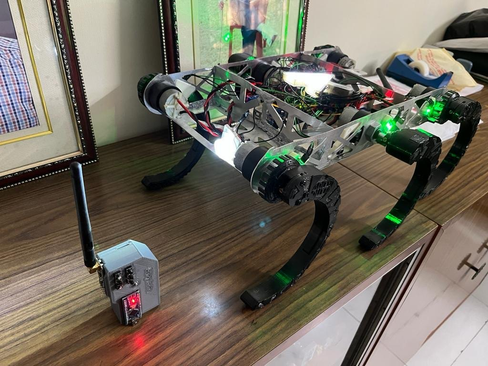
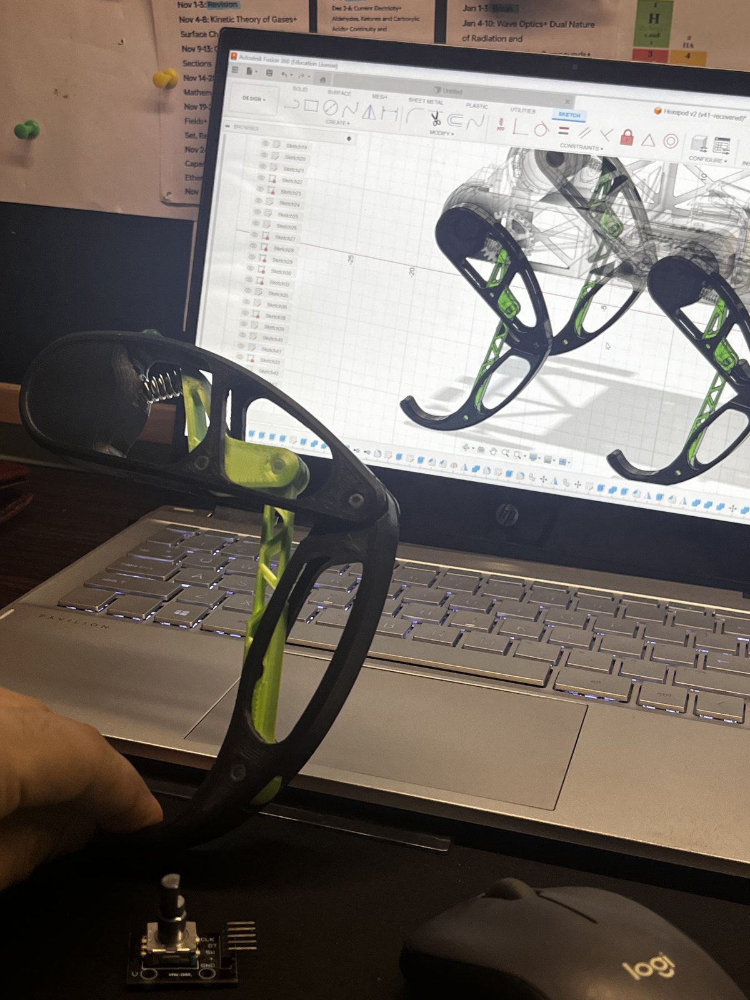
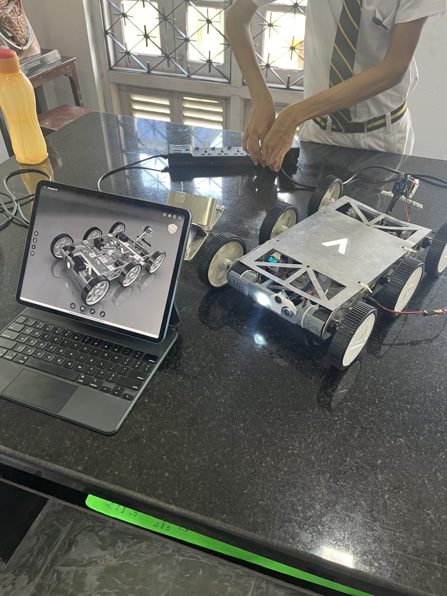
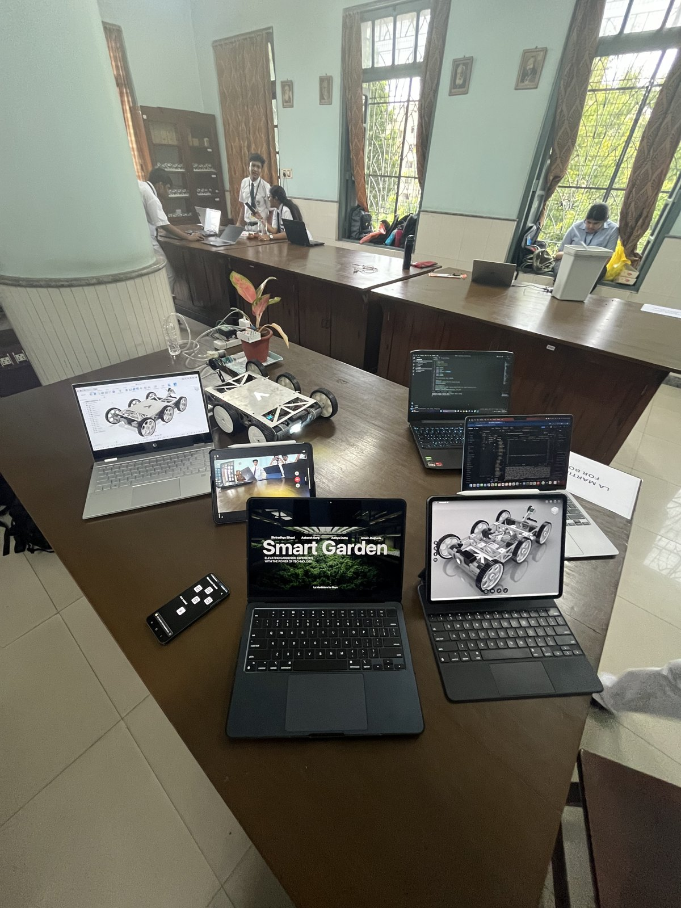
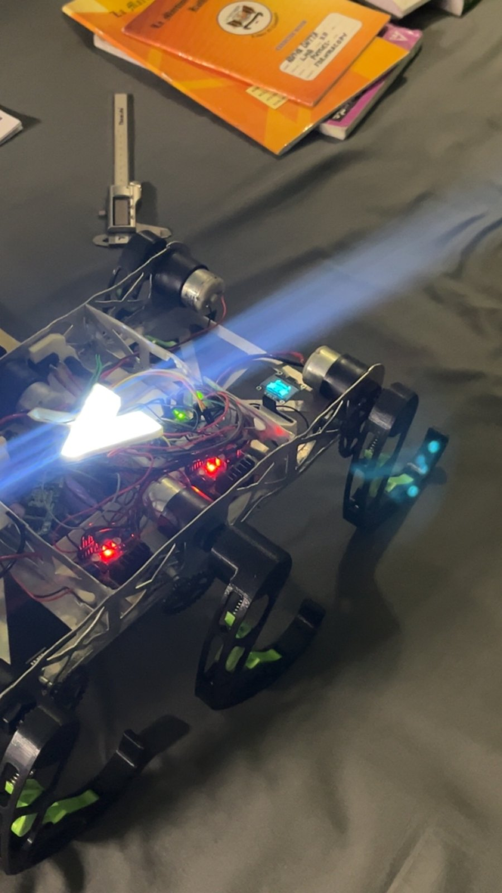

Built at seventeen to answer one question — could I manufacture a real thing? A wheel-leg robot on a hand-brazed aluminium spaceframe that walked, and then, because its frame was modular and its wheels knew where they were, turned into a tractor.
The design as modelled — six WHEGs on push-rod suspension, the battery slung beneath a spaceframe deck.
RoVolt did not start as a competition entry or a syllabus project. It started because I had spent a year drawing things in CAD and wanted to know whether I could actually make one — cut metal, join it, put motors in it, and have it survive being switched on. Everything I have built since traces back to this frame: Sylvara is its agricultural branch grown into a company, and CatBot is what happens when the legs get serious.
The locomotion is a WHEG — a wheel-leg hybrid, a rimless wheel whose spokes are legs. It rolls on flat ground and climbs on rough ground without a single controlled joint, which at seventeen with one motor driver per side was exactly the right amount of ambition. The first legs were v1: solid, shaped black PLA, rigid to the frame. They walked — and every rock they climbed went straight up into the chassis. So v2 put each WHEG on a 3D-printed push-rod suspension, and the difference off-road was not incremental: the body stayed level while the legs hunted for the ground, and the machine stopped shaking itself apart.
The suspension needed springs, and I had none. What I did have were the false-ceiling light fittings I had zip-tied to the top of the terrace so I could work after dark; their spring clips were the right rate, so I cut them out and the lights hung on by their cables. The pivots needed steel dowels cut to length, and I had no tools that could cut metal — but the refill from a ballpoint pen is a precise steel tube of exactly the diameter the printed bore needed, so the legs pivot on pen refills. None of this is in the CAD. All of it is why the robot exists: jugaad is not the absence of engineering, it is engineering when the parts bin is empty.



Left: the remote beside RoVolt on its v1 legs — solid PLA, no suspension. Right: the v2 push-rod leg in hand beside its model — printed links, ceiling-light springs, pen-refill pivots.
The robot needed a controller, and I had just been given my first 3D printer — an Ender 3 Pro. I designed an NRF24 radio remote from scratch, two sticks and a handful of buttons around a microcontroller, and printed its shell in Class 11 the same week. Watching your own design come off the bed, layer by layer, at seventeen, is a particular kind of hooked. That printer has since made every prototype part on this site.
The remote's shell printing on the Ender 3 Pro — Class 11.
The chassis is a spaceframe in 6061 aerospace aluminium, laser-cut from my drawings — the first time a part I had drawn came back from a machine as a thing I could hold. Joining it was the part I had to learn. Aluminium does not want to be brazed by a teenager with a hand torch; it wants to slump a few degrees before the filler flows. I brazed the frame by hand anyway, joint by joint, and it is still rigid enough to stand on. That frame is the reason the second half of this story was possible.
Brazing the laser-cut frame by hand.
First walk — six WHEGs, encoder-fed DC motors, a Raspberry Pi and a remote I had designed the week before.
Driven by DC motors with quadrature encoders through TB6612FNG drivers, under a Raspberry Pi 3 on a proto-board, over a radio link to an NRF24 remote of my own design. The encoders mattered more than I understood at the time: a machine that knows how far each wheel has turned is a machine you can hand a task to.
Because the frame was modular and the wheels had encoders, RoVolt could be reconfigured rather than rebuilt. For the competitions it became an agricultural robot: the 2×3 WHEG layout collapsed to three wheels, an IMU joined the encoders for heading, and a rear-mounted arm carried a soil-moisture probe, a plough and a seeder. Behind it sat a working control backend and a companion app that showed the robot's readings live — moisture against position, where it had been, what it had planted.
The ambition was an automatic tractor for the small farm: drive a row, sense the soil, plough and seed where the moisture said to, turn, repeat, unattended. The full autonomous loop was never closed in the field — but the sensing, the actuation, the backend and the app all worked, and it was the first time I had built a system with a spine of software running over hardware I had made. Sylvara is what that backend became when the plants stopped needing a robot to visit them.


The agricultural form on the expo table, with its CAD and the companion app alongside.


Late at night, hatch off, lights on. The A on its back stands for Aditya — I was seventeen, and I had made a thing that stood up.
The part of RoVolt that mattered most is not in the CAD or the spec table. It is that I did not build it alone. The people who developed it with me, who stood beside it at every fest and presented it with me, are the same people I am building with now — they are the team behind Sylvara, and they are the team around CatBot. A brazed aluminium frame in Class 11 is where we met, and every photograph on this page is from the place the whole journey started.
RoVolt took first place at the Smart Bengal Hackathon, and won at the science fests of Calcutta Boys' School, La Martiniere for Boys, Don Bosco and Modern High International, among others. It was shown at multiple expos and competitive hackathons, took top placements and awards, and was covered in the press. Live evaluations kept coming back to the same two things: it traversed real terrain reliably, and it could be reconfigured into something useful without being rebuilt.


Designing, laser-cutting and brazing the chassis myself kept structural integrity and iteration speed in my own hands. Every project since has been built on that habit.
Ceiling-light springs and pen-refill pivots were not compromises; they were the design meeting the parts bin. Knowing what a part needs to be lets you find it anywhere.
A spaceframe you can unbolt and wheels that know where they are turned a walking demo into a working agricultural platform in weeks, not months.
Encoders, an IMU and a backend that remembered readings were the first autonomy stack I ever built — the same shape, scaled up, that CatBot runs today.